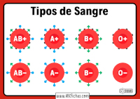
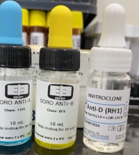
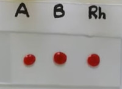

Tipagem Sanguínea
Tipagem Sanguínea é o método utilizado para identificar características específicas do sangue de uma pessoa, sendo a principal delas: o tipo sanguíneo. O tipo sanguíneo do indivíduo pode ser classificado em 4 tipos de acordo com o sistema ABO:
- Sangue A
- Sangue B
- Sangue AB
- Sangue O

Lembrando que é necessário levar em conta o fator Rh para classificar o sangue em positivo ou negativo.
Durante o processo são utilizados três reagentes:
- Soro Anti-A: Determina se o tipo é A, B ou O
- Soro Anti-B: Determina se o tipo é A, B ou O
- Soro Anti-D: Determina o fator Rh, ou seja, se é positivo ou negativo

- O processo é feito com 3 gotas do sangue extraído do paciente. Cada gota é posicionada em um local de uma película limpa confeccionada para o exame.

- Para cada gota de sangue é colocada uma gota de cada um dos reagentes (Anti-A; Anti-B; Anti-D)
- Após isto é feito a homogenação de cada uma das 3 gotas de sangue com seus devidos reagentes. Nesta etapa é fundamental tomar cuidado para não misturar as gotas de sangue.
- Etapa final de observação.
Fator Rh
Grupo da Feira de Ciências
Quem são os alunos responsáveis por esse projeto?? Clique aqui para descobrir mais sobre!